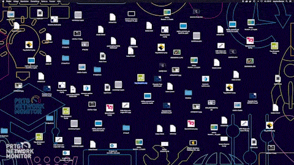
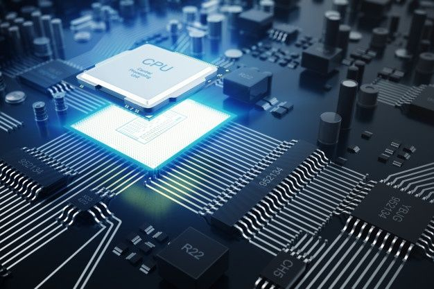
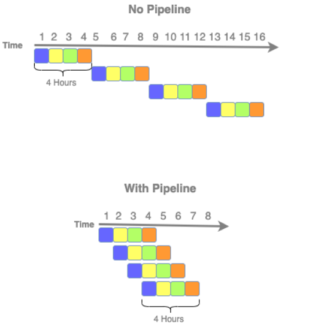

Arquitetura e Organização de Computadores:
Inicialmente, é importante ressaltar a diferença entre arquitetura e organização, em que a arquitetura é a parte visível ao programador, como a quantidade de bits usados.
Agora, a organização é a parte mais física ou de "baixo nível", sendo a implementação da arquitetura, ou seja, como será implementada, como, por exemplo, através da CPU, memória... e como eles vão interagir entre si para cumprir o propósito definido.
Além disso, a arquitetura é muito importante para a compatibilidade do código, como é o caso do IBM System/370, que compartilha a mesma arquitetura básica e gera a mesma compatibilidade, porém vai mudando a organização.
Estrutura e função:
- Estrutura - É a maneira como os componentes interagem entre si.
- Função - São as funções que cada componente executa no sistema como um todo, por exemplo, alguns processam dados, outros fazem o armazenamento de dados...
Atualmente, os computadores seguem a arquitetura proposta por Von Neumann, reunindo os diversos componentes necessários para o funcionamento de um computador: Memória, Unidade Lógica e Aritmética, Unidade Central de Processamento e Unidade de Controle.
Processadores

Os processadores têm a função de processar os dados através de instruções. Dessa forma, o processador é composto por:
- ULA - Unidade Lógica e Aritmética: É a responsável por executar cálculos aritméticos e lógicos, sendo alguns exemplos: AND (só é verdade se ambos forem verdadeiros), OR (é verdadeiro se pelo menos um for verdadeiro), XOR (é verdadeiro se as variáveis assumirem valores diferentes entre si), NOT (negação, é verdadeiro se não for verdadeiro).
- UC - Unidade de Controle: É a responsável pelo controle das instruções dentro do processador, garantindo que o que é pedido seja executado corretamente. Por exemplo, quando é inserido um dado no barramento, a Unidade de Controle o retira e o armazena.
- Obs: Barramento - responsável por transmitir dados entre elementos (como um fio).
- Registradores: Os registradores são como pequenas memórias presentes no processador, porém são extremamente rápidas. Existem dois tipos: Propósitos Gerais (utilizados para armazenar dados) e Específicos (armazenam informações necessárias para executar uma instrução e são comandados pela unidade de controle).
- Exemplos de registradores específicos são: PC (Contador de programa), responsável por armazenar a próxima posição de instrução que será executada, e RI (Registrador de Instrução), que armazena o código da instrução que está sendo executada.
Instruções
As instruções são responsáveis por coordenar o que precisa ser feito, ou seja, o que será executado pelo computador, como por exemplo um programa, que é composto por diversas instruções que são executadas em uma ordem específica.
OPCODE - Código binário que identifica a instrução, executando em conjunto com outras funções, como o Operando, que muitas vezes aponta a localização de um dado em particular.
Existem diversos tipos de instruções, incluindo:
- Matemáticas e Lógicas
- Movimentação de Dados
- Entrada e Saída
- Controle
Além disso, para serem executadas, segue-se um passo a passo:
- S1 - Busca a instrução na memória
- S2 - Decodifica a instrução pelo processador
- S3 - Busca o operando na memória
- S4 - Executa a instrução pelo processador
- S5 - Escrita do resultado
Paralelismo

O paralelismo é o processo pelo qual o processador divide os passos necessários para executar uma determinada função. Dessa forma, os passos podem ser controlados por partes menores, classificando o clock do processador, que é definido pelo tempo que cada passo (estado) levará para ser executado.
Sob essa ótica, o paralelismo é uma ótima escolha para evitar a necessidade de esperar a liberação dos dados pela memória.
Assim, o paralelismo pode ser executado de duas formas: por Instruções ou por Hardware. Por exemplo:
- Instruções: É quando várias etapas são executadas em paralelo em diferentes partes do processador, como o Pipeline, que executa em cada parte da CPU uma ação, e quando todas terminam, o processo é concluído.
- Hardware: Ocorre quando há mais de um processador, permitindo a divisão dos componentes, como é o caso dos Multiprocessadores, que são processadores interligados que executam instruções de um mesmo programa ao mesmo tempo e compartilham a mesma memória (cada um possui sua própria memória individual).
Por fim, os últimos conceitos essenciais são CIS e RISC, que são:
- CIS - É um tipo antigo de processador que possui uma grande quantidade de instruções já gravadas nele, visando acelerar sua velocidade através da eliminação da necessidade de buscar as operações.
- RISC - É o contrário do CIS, possuindo poucas instruções, apenas as mais essenciais e frequentes.
Obs: Processadores CISC são mais utilizados em computadores, enquanto os RISC são comuns em dispositivos móveis devido à sua eficiência energética e tamanho compacto.
|